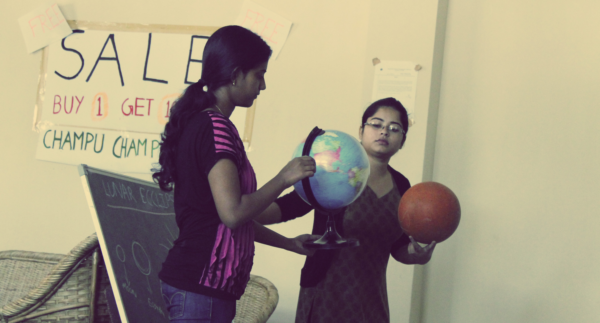

Project Duration: July '12 - November '12
Publication: Mehul Agarwal, Himanshu Bansal & Keyur Sorathia, “Incorporating Collaboration to Foster Voluntary Teaching”, in workshop on Intelligent User interfaces for Developing Regions (IUIDR), International Conference on Intelligent User Interfaces 2013, CA, USA (19-22nd March).
Development: https://github.com/shashankgroovy/lets_teach
Lets's Teach
Incorporating Colaboration to Foster Voluntary Teaching
Brief
To provide a platform for volunteer teachers that can cater to problems occurring during teaching. We aim to do this by providing them tools and resources like open source teaching material, discussion forums etc. This in-turn would help them to initiate and continue voluntary teaching resulting in better life for underprivileged children.
Research
We started our research with mess workers in our hostel and asked about their past education experience, their daily activities etc. Next, we went to Shishugram, an orphanage home near IIT Guwahati campus. We interviewed the manager of Shishugram about education of the children. From there, we came to know about a group of girls teaching those children. We interviewed them about their motivation, their teaching experience, methods and problems they faced during teaching. We found some other voluntary teachers around campus and interviewed them similarly. We also interviewed some people doing probable (future) voluntary teaching and asked them about their any past voluntary actions related to helping any underprivileged children and reasons why they were not taking steps if they were concerned.
Simultaneously we went through some research papers on literacy, education in India and on voluntary teaching. Our purpose behind reading these papers was first, to find the current trends and their reasons in Indian education sector and second, to understand different paradigms and aspects of voluntary teaching. We also researched about other projects happened or happening around the world to educate economically backward people to know various dimensions of our projects.
Affinity Analysis
We gathered all the user statements, observations and divided them into four major categories of problem point namely- Management, Problem occurring due to students, Problem occurring during teaching and Problem in Initiation of Teaching.
Proposed Concept
From various design concepts, we decided to focus upon collaboration in voluntary teaching and design a collaborative teaching platform for teachers. After a lot of brain-storming we chose this concept we found out that this has potential to cater many of the problems like doubts, management, study material, confidence and it would also them keep motivated.
We came up with a concept of collaborative teaching. The major work in collaborative teaching is done to increase interdisciplinary learning in college and high school but its use in volunteerism is still a field that needs to be explored and nurtured. In collaborative teaching instead of single teacher taking class there could be multiple teachers taking class and thereby reducing dependency on a single person. The collaboration can be local or online based.
Activity


An activity was conducted where two teachers were asked to collaboratively take a class. This included choosing a topic, planning the content, managing the class. They choose a general topic i.e. Solar Systems that can be taught to students of various age groups. The activity aimed to investigate the impact of collaboration in conventional teaching methods with respect to- Attention, Quality, Co-ordination, Catering Difficulties, Preplanning and Experience. Observation was done during the collaborative class followed by interviews. The insights from the activity and user study was used to ideate a web-app that can support voluntary teachers in their task of teaching.
Ideation
The web app was ideated trying to minimize the effort that is required to make notes. And also promote sharing of notes and other teaching material to teach their class. This can minimize time lost in planning to make up for extra time for collaboration. Most of the people in the interview said that they had a slight hesitation in taking regular classes or that certain breaks in classes lead them to discontinue. So in this model since more than one teacher would be taking class, when one is not able to take class other teacher can replace him/ her.